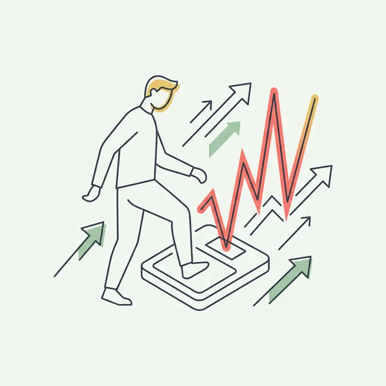
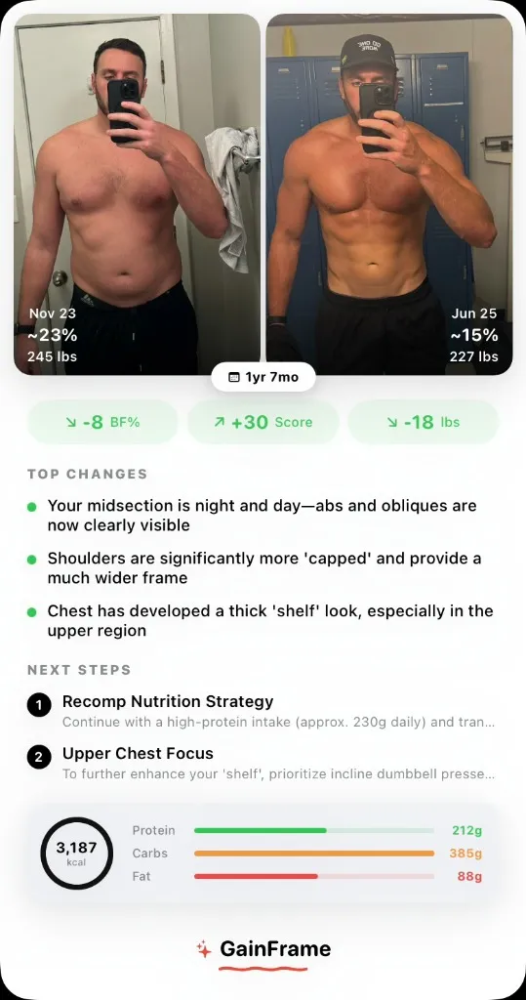

The Psychology of Progress: Why Daily Weigh-ins Sabotage Long-Term Success
You stuck to your diet perfectly, yet the scale went up three pounds overnight. Here is why the daily snapshot is a psychological trap — and what you should track instead.

GainFrame is launching soon.
Sign up for early access and be the first to know when we go live.
Free . No spam . Unsubscribe anytime
Outsource the analysis to remove bias

Human perception is unreliable. You see yourself every day, so gradual changes become invisible. You focus on problem areas while ignoring improvements elsewhere.
This is the core psychology behind the GainFrame platform. It treats your body composition like a data set — removing the emotional baggage of "feeling fat" or "feeling lean" today. Instead of staring at the mirror trying to guess if you look different, the AI acts as your emotionless analyst: it evaluates shadow depth, muscle separation, and contour lines to provide a definitive, unbiased assessment based on visual data rather than emotional self-perception.
Features like automatic side-by-side overlay comparisons and trend-line graphs visually plot your body fat trajectory over a sustained period. It forces you to see the 90-day trend rather than the 24-hour fluctuation.
Choosing your tracking method
You have two solid options for escaping daily scale obsession, and the right choice depends on your personality:
Option 1: Weigh daily, look at weekly averages. This gives you more data points and a smoother trend line, but requires the discipline to ignore individual readings. If you can genuinely detach from single numbers, daily averaging gives you slightly more precision.
Option 2: Weigh once per week. Skip the daily noise entirely. This works better if seeing a high number ruins your morning regardless of what you tell yourself. Pick one consistent day, weigh first thing in the morning, after using the bathroom, before eating or drinking anything. Record the number. Do not react to it.
Neither approach is superior. The best method is the one you'll actually follow without emotional fallout.
The monthly review framework
Once per month, conduct a real assessment. Compare this month's weekly averages to last month's. Review your bi-weekly progress photos side by side. Ask three questions:
- Is the weight trend moving in the right direction?
- Do the photos show visible changes anywhere on my body?
- Am I recovering well and maintaining energy?
If two of three answers are yes, stay the course. If all three are no for two consecutive months, then consider adjustments: reduce daily calories by 100–150, add one extra walk per week, or both. Small corrections based on real trends — not panic moves based on a single morning's number.
The scale isn't your enemy. Your relationship with it is. The system that works: track weekly averages for the trend, take bi-weekly photos for visual confirmation, and review both monthly. The trend always beats the noise.
Related Articles
GainFrame is launching soon.
Sign up for early access and be the first to know when we go live.
Free . No spam . Unsubscribe anytime